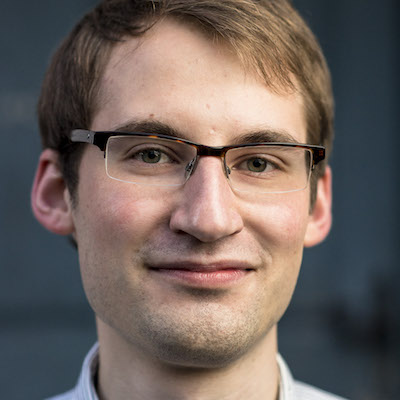
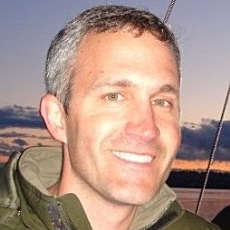
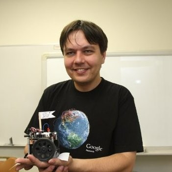
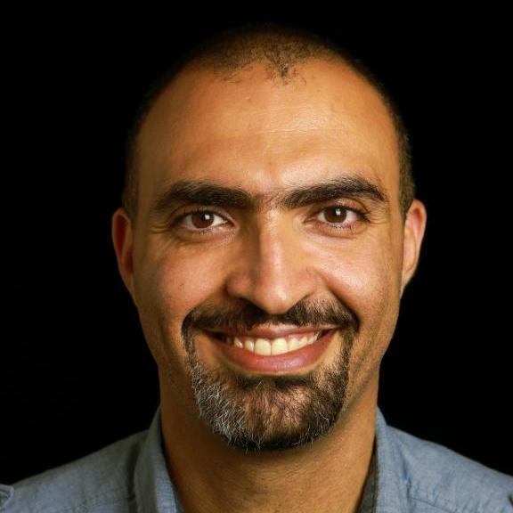
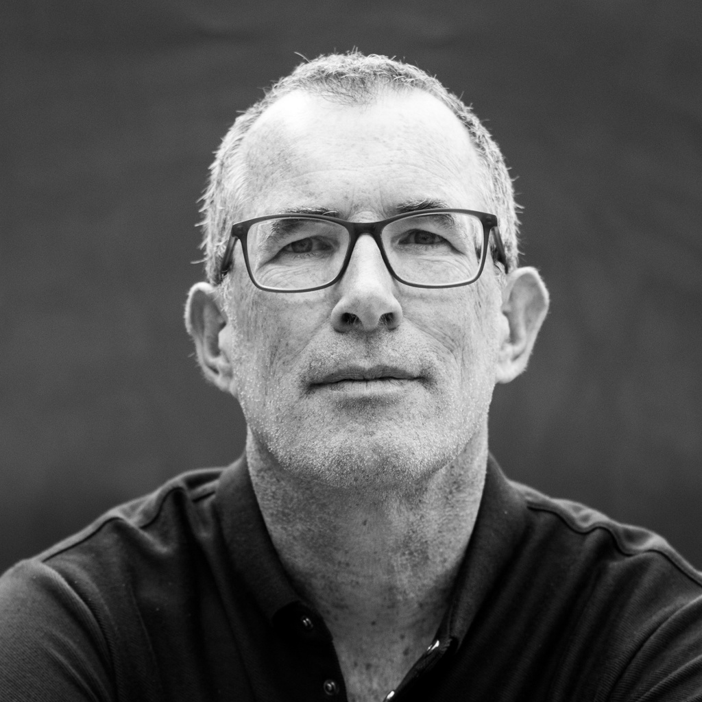
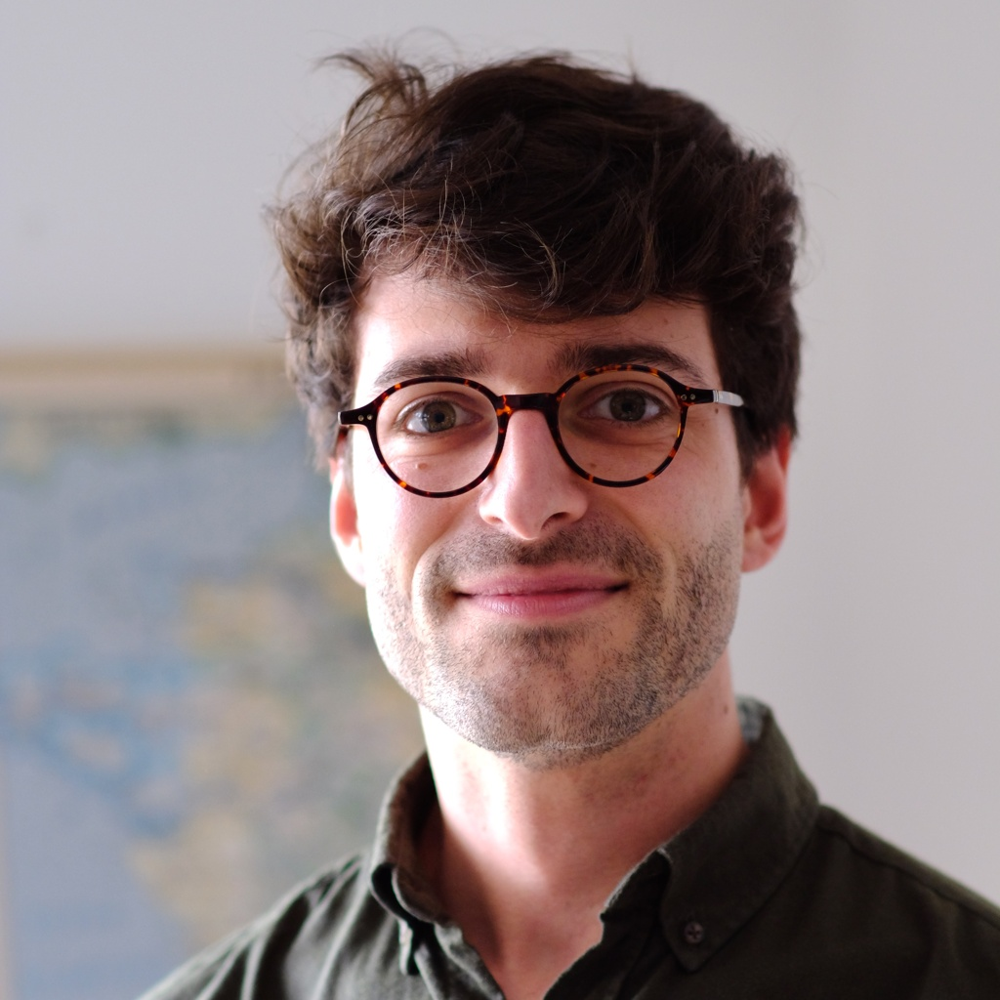
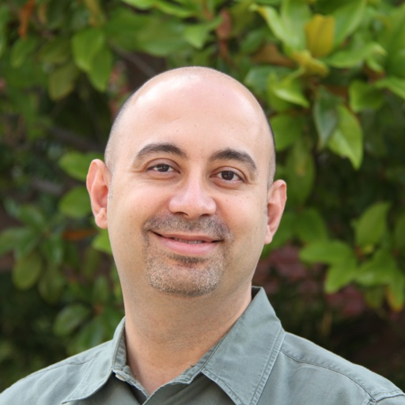

Jona Ballé (New York University)
Jona Ballé is an Associate Professor at New York University, studying data compression, information theory, and models of visual perception. They defended their master's and doctoral theses on signal processing and image compression under the supervision of Jens-Rainer Ohm at RWTH Aachen University in 2007 and 2012, respectively. This was followed by a brief collaboration with Javier Portilla at CSIC in Madrid, Spain, and a postdoctoral fellowship at New York University’s Center for Neural Science with Eero P. Simoncelli, where Jona studied the relationship between perception and image statistics. While there, they pioneered using machine learning for end-to-end optimized image compression – this work ultimately led to the JPEG AI standard, finalized in 2025. From 2017 to 2024, Jona deepened their ties to industry as a Research Scientist at Google, before returning to NYU. Jona has served as a reviewer for top-tier publications in both machine learning and image processing, such as NeurIPS, ICLR, ICML, Picture Coding Symposium, and several IEEE Transactions journals. They have been active as a co-organizer of the annual Challenge on Learned Image Compression (CLIC) since 2018, and on the program committee of the Data Compression Conference (DCC) since 2022. (read more)

Lucas Theis (Mabyduck)
Lucas Theis is the founder of Mabyduck, a startup focusing on perceptual quality evaluation. Lucas previously worked at Google DeepMind on neural compression and information theory. He did his PhD at the Max Planck Research School in Tübingen, working with Matthias Bethge on deep generative models of natural images. After finishing his PhD, he started to work for a neural video compression startup called Magic Pony Technology, which got acquired by Twitter in 2016. Lucas has served as a reviewer for some of the top machine learning journals and conferences (JMLR, CVPR, ICML, NIPS, ICLR) and is co-chair of the VQEG interest group on Subjective and objective assessment of GenAI content (SOGAI). (read more)

Ross Cutler (Microsoft)
Ross Cutler is a Partner Applied Scientist Manager at Microsoft in the IC3 group where he manages the IC3-AI team of applied scientists and software engineers with the focus of improving Teams/Skype audio/video quality and reliability and enabling new functionality with AI. He has been with Microsoft since 2001, starting as a researcher in Microsoft Research. He has published 50+ conference papers, journal papers, and book chapters, and has 95+ granted patents in the areas of computer vision, audio processing, machine learning, optics, and acoustics. Ross received his Ph.D. in Computer Science (2000) in the area of computer vision from the University of Maryland, College Park. He is a reviewer in CVPR, ICCV, ICML, ICASSP, and INTERSPEECH. (read more)
Till Aczel (ETH Zürich)
Till Aczel is a PhD student at ETH Zurich, working under the supervision of Prof. Roger Wattenhofer. His research focuses on learned image compression and image quality assessment, with a particular emphasis on aligning image compression techniques with perceptual distortion. Till holds an MSc in Mathematical Modelling and Computation from the Technical University of Denmark (DTU), where he completed his thesis in 2023. (read more)
Fabien Racapé (Interdigital)
Fabien Racapé is a senior scientist at InterDigital in Los Altos, CA, focussing on video compression using hybrid and neural-network-based methods, as video coding for machines. He has been involved in H.266/VVC and MPEG Neural Network Compression (NNC) standardization activities. He received his M.Sc. in signal processing and telecommunications from the Grenoble Institute of Technology, France, in 2008, and his PhD degree from the National Institute of Applied Science (INSA), Rennes, France, in 2011. (read more)

George Toderici (Google)
George Toderici joined Google in 2008, initially working on projects involving neural network architectures and classical approaches for video classification, action recognition, YouTube recommendations, and video enhancement. Later, his focus shifted to lossy multimedia compression using neural networks within Google Research. In 2024, George transitioned to DeepMind, where he is currently a researcher working on LLM memory. Throughout his career, George has contributed significantly to the community. He helped organize major video classification challenges like THUMOS-2014 and YouTube-8M (CVPR 2017, ECCV 2018, ICCV 2019), contributed to the Sports-1M dataset, and was an original organizer of the CLIC workshop (CVPR 2018-2025). He also served as an Area Chair for ACM Multimedia 2014 and is a frequent reviewer for premier conferences like CVPR, ICCV, and NeurIPS. (read more)
Andrew Segall (Amazon)
Andrew Segall received the B.S. and M.S. degrees in electrical engineering from Oklahoma State University, and the Ph.D. degree in electrical engineering from Northwestern University. He is currently the Head of Video Coding Standards at Amazon Prime Video. Previously, he was a Director at Sharp Labs of America, where he led the Department of Systems, Algorithms and Services while simultaneously holding the position of Distinguished Scientist at Sharp Corporation. He is an active participant in the international standardization community and has developed and contributed technology to the Versatile Video Coding (VVC), High Efficiency Video Coding (HEVC), Advanced Video Coding (H.264/AVC), and ATSC 3.0 projects. He currently serves as co-chair of the Neural Network Video Coding activity in the Joint Video Experts Team (JVET) of ITU-T SG16 Question 6 and ISO/IEC JTC1/SC29/WG5, HDR Chair for the MPEG Visual Quality Assessment Advisory Group (ISO/IEC JTC1/SC29/AG5), and as a representative on the AOMedia Steering Committee. (read more)

Ramzi Khsib (Amazon)
Ramzi Khsib, is a Principal Software Development Engineer with AWS Elemental's Research & Development team, with a career spanning over two decades in the fields of video processing and compression. Ramzi is a five-time recipient of the Technology & Engineering Emmy Awards. His expertise encompasses a vast array of subjects, including pixel processing, video filtering, perceptual quality enhancement, and machine learning. As the lead architect in video compression, Ramzi has played a pivotal role in transforming AWS Elemental into a global frontrunner in video quality. Ramzi's research interests lie at the crossroads of video compression, computer vision, and machine learning and avid advocate of the compression efficiency at lower compute costs. (read more)
Yixu Chen (Amazon)
Yixu Chen is an Applied Scientist on the Prime Video Compression Efficiency team. He received his M.S. in Computer Engineering from Texas A&M University in 2021. His work focuses on live video streaming optimization, including applications such as video quality metrics and super-resolution. His research interests include super-resolution and frame-generation, video quality assessment, video saliency and video coding. (read more)

Pierrick Philippe (Orange)
Pierrick Philippe works as a video coding specialist with Orange, France. He received his PhD on audio coding at Paris University in 1995. Until 2010, he contributed to the standardisation of several audio coding algorithms at MPEG, ITU-T and 3GPP. Since then, he has been active in the development of image and video coding algorithms using machine learning and neural networks. In this area, he contributed to Versatile Video Coding especially on the transform aspects. (read more)

Théo Ladune (Orange)
Théo Ladune is a research engineer at Orange Innovation (France). He obtained his Ph.D. in deep learning for video coding from the University of Rennes in 2021. Since joining Orange Innovation that same year, he has been investigating various applications of deep learning in video coding, including autoencoders and implicit representations. His current research mainly focuses on creating innovative video coding techniques that rely on very lightweight neural networks. (read more)
Olena Chubach (MediaTek)
Olena Chubach obtained her B.Sc. and M.Sc. degrees in Applied Mathematics from Odesa National I.I. Mechnikov University. She later earned her Ph.D. in Electrical Engineering from RWTH Aachen University in Germany. In June 2018, she joined MediaTek Inc. in San Jose, USA, where she currently holds the position of Senior Staff Engineer in the Multimedia Technology Development Division. She actively participates in the international standardization community and has actively contributed to the Versatile Video Coding (VVC) project. Her research interests are primarily focused on video coding algorithms and application of neural network-based algorithms for image and video coding. (read more)

Ali Bilgin (University of Arizona)
Ali Bilgin received his Ph.D. from University of Arizona in Electrical and Computer Engineering in 2002. He is currently an Associate Professor of Biomedical Engineering, Electrical and Computer Engineering, and Medical Imaging, and serves as the Associate Department Head of the Department of Biomedical Engineering at the University of Arizona. He has served as Associate Editor for IEEE Transactions on Image Processing, IEEE Signal Processing Letters, and IEEE Transactions on Computational Imaging, and as Area Chair for the IEEE International Conference on Acoustics, Speech, and Signal Processing (ICASSP) and IEEE International Conference on Image Processing (ICIP). Between 2013 and 2023, he was the Technical Program Co-Chair of the IEEE Data Compression Conference (DCC). He is currently serving as the General Co-chair of DCC. (read more)